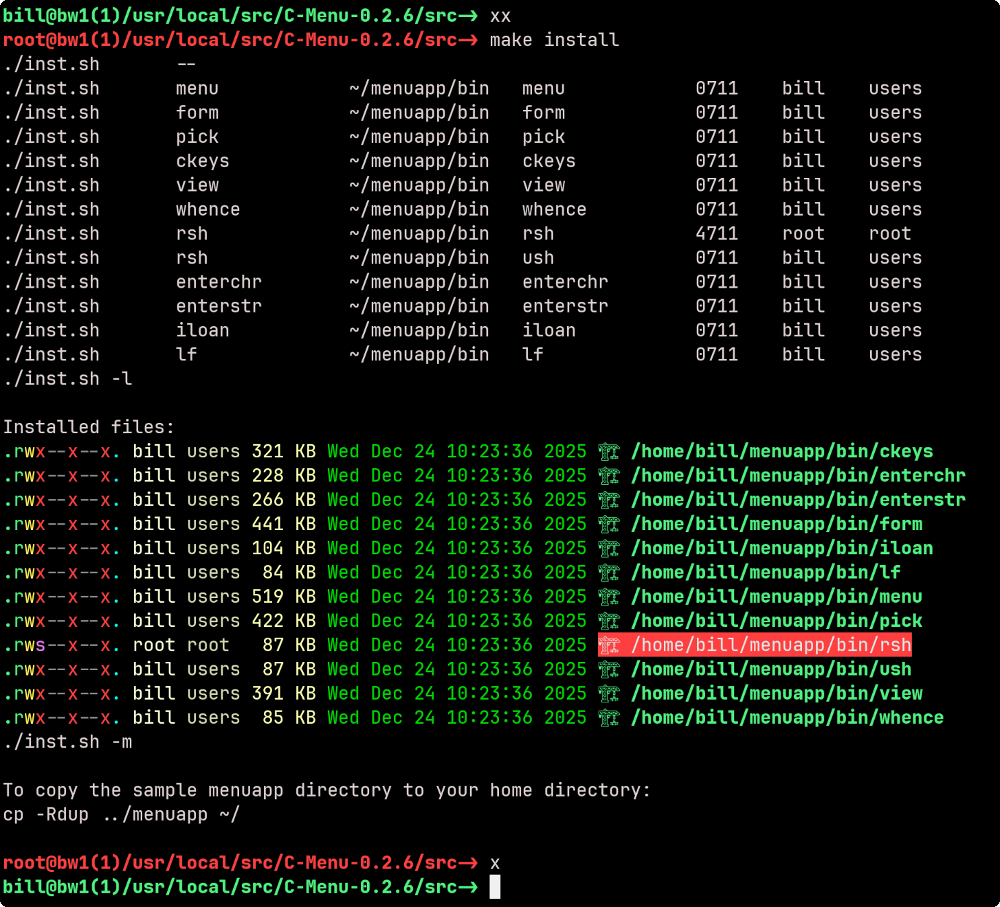
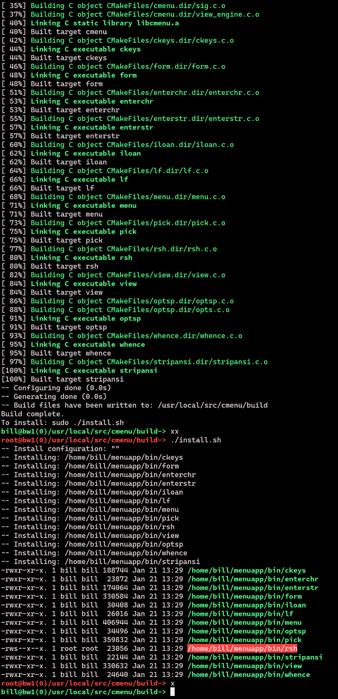
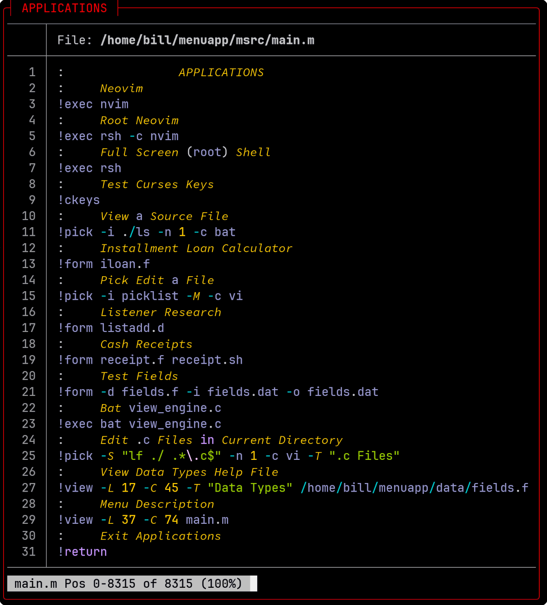
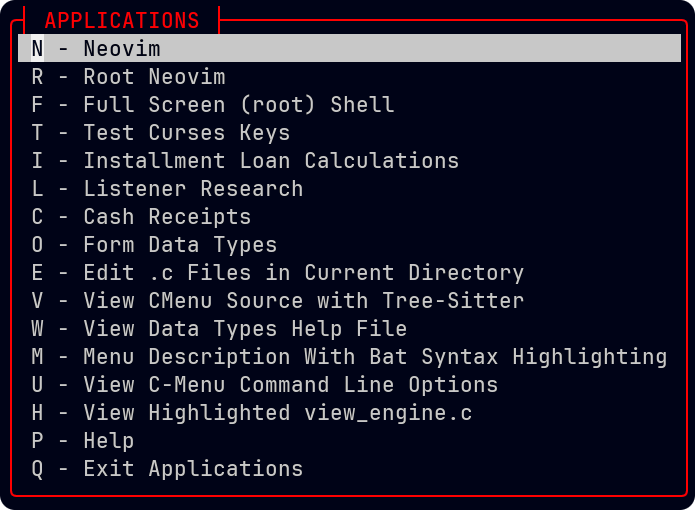
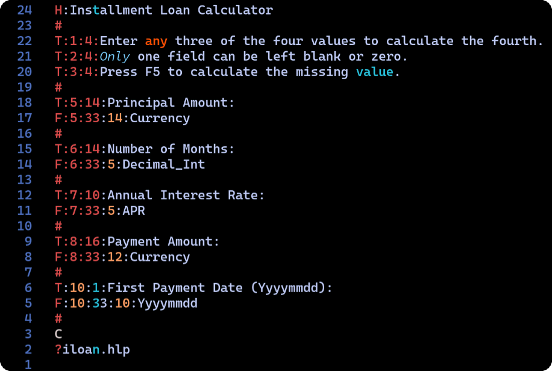
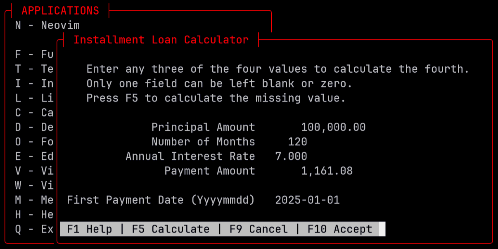
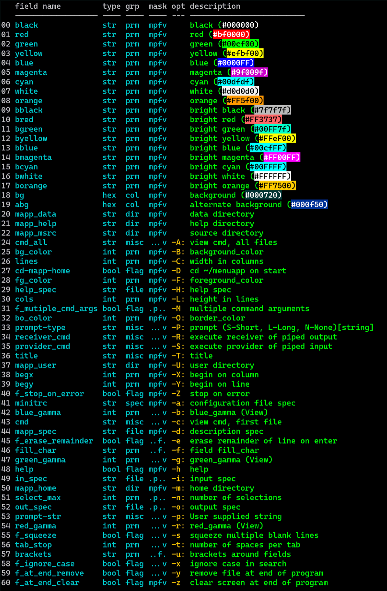

|
C-Menu v0.2.9
User Interface Toolkit
|
|
C-Menu v0.2.9
User Interface Toolkit
|
The C-Menu is a versatile and user-friendly User Interface Toolkit suitable for a wide variety of applications. This guide provides detailed instructions on how to use and customize the C-Menu to fit your needs.
To begin, follow these steps:
To enable root access features, you need to install the RSH (Remote Shell) program with setuid root permissions. This allows certain menu items to execute commands with root privileges.
WARNING: Do not install RSH unless you understand the security implications of setuid root programs. RSH allows users to execute commands with root privileges, which can pose significant security risks if not managed properly.
You can install these features in you $HOME/.bashrc by navigating to the "C-Menu/rsh" directory and running
Of course, you should never install anything in your .bashrc that you do not understand or trust.
Note: the following listing uses "lsd" by default, and may not look the same on your system if you do not have "lsd" installed. You can modify the "Makefile" to use "ls" instead.
Once RSH, "xx", and "x" are installed, subsequent make install processes will appear as follows:

Here's another example with the C-Make build. You will notice that the compilation portion of make is executed without root privileges, while the installation portion is executed with root privileges. This is a safer approach, as it minimizes the amount of code that runs with elevated privileges.

When finished, take some time to explore the ~/menuapp directory to familiarize yourself with its features.
C-Menu parses a menu description file, which contains text lines to display and command lines, which are essentially operating system commands.

In this example, "Neovim" is a menu item that, when selected, will execute the command nvim. The user can select it by clicking on "Neovim" or by typing the corresponding letter assigned to it.
Form is a companion tool for C-Menu that allows users to create and manage forms for data entry and editing. It can be used to gather user input before executing commands from the C-Menu.


Form will look for a file with the same name as the form but with a .hlp extension. It will search in the current directory and then in the menu help directory, ~/menuapp/help.
The ":" character is used as a delimiter in the fields above, but any character that is placed immediately after the line designator (H, T, F, ?) can be used as a delimiter. For example, the following two lines are equivalent:
String: Any text Decimal_Int: Integer number Hex_Int: Hexadecimal integer Float: Floating point number Double: Double precision floating point number Currency: Currency amount APR: Annual Percentage Rate Yyyymmdd: Date in YYYYMMDD format Hhmmss: Time in HHMMSS format
Data types determine the format of displayed data. Of course, all data is initially a text string, but Form converts numeric data to internal numeric binary according to the datatype specified.
WARNING: For applications that require extreme accuracy, such as banking, financial, or scientific applications, none of the data types currently available in Form are recommended. The plan is to add 128-bit BCD support via decNumber or rust-decimal in a future release.
The Field Format Specifiers can be any combination of upper and lower case, and new types can be easily added by modifying the source code.
C-Menu Pick is a utility that allows users to create and to manage pick lists for selection within the C-Menu system, or stand-alone. It can be used to present a list of options for the user to choose from.
Pick does not have a description file, but instead takes its input from standard input (stdin) or a file. Each line of input represents a separate pick item. The user can select an item by clicking on it or moving the cursor to highlight it and pressing the space bar to toggle it on or off. The number of items that can be selected is configurable by a command-line option (-n).
To select an item, the user can either click on it with the mouse or move the cursor to highlight it and press the space bar to toggle it on or off. Once the desired items are selected, the user can press the Enter key to confirm the selection and exit Pick.
If "number of selections" (-n) is set to 1, selecting an item will automatically confirm the selection and exit Pick.
Pick can be invoked from within C-Menu or from the command line using the following syntax:
C-Menu View is a utility that allows users to view text files within the C-Menu system, or stand-alone. It provides a simple interface for reading files without the need for an external text editor.
If -L and -C are not specified, View will attempt to use the terminal size. If -L and -C are set, view will open in a box window.
View supports syntax highlighting via tree-sitter. To enable this feature, ensure that tree-sitter-cli is installed and that the appropriate grammar files are available. Alternatively, you can use "pygmentize" or "bat", but tree-sitter is preferred for performance and flexibility.
View uses complex-characters (cchar_t) for rendering text, which allows it to handle a wide range of character sets and encodings including ASCII, UTF-8, multi-byte, and wide-character (wchar_t) formats. View does not write ANSI escape sequences to the display, but instead converts and incorporates character attributes directly into the character data structures.
View displays its output on a virtual pad, which can be larger than the actual display window enabling the user to scroll horizontally and vertically.
View supports extended regular expressions (regex) for advanced text searching capabilities.
Arrow Keys: Move the cursor up, down, left, or right. Alternatively, h, j, k, and l move left, down, up, and right, respectively.
Page Up/Page Down: Scroll up or down by one page. Alternatively, Ctrl+F/Ctrl+B: Scroll up or down by one page.
Home/End: Move to the beginning or end of the line.
You can specify multiple files to view on the command line, and advance to the next or previous file by entering "N" or "P" respectively.
"o" opens a file dialog to select a file to view.
"!" executes a shell command and displays the output in the view window.
"q" exits view
"v" opens the current file in an external editor, such as vim or nvim, based on the value of "editor" in the configuration file (~/.minitrc) or the environment variable, DEFAEULTEDITOR.
"w" writes the contents of the view window to a file. The user will be prompted to enter a file name, and the contents of the view window will be saved to that file.
"/" initiates a forward search for a pattern.
"?" initiates a backward search for a pattern.
"n" repeats the last search in the same direction.
"V" display version
"H" display help
"+" sets a command that will be executed immediately after view opens a file. This can be used to set the initial search pattern, for example.
"-" is a leader key to certain settings in view
"-i" toggles case-insensitive searching "-s" toggles squeeze blank lines "-t" set tabstops "-:" enter command prompt "-l" set long prompt "-n" set no prompt"
To search forward for a pattern, press the "/" key, enter the desired pattern, and press Enter. View will highlight the first occurrence of the pattern after the current cursor position. To find the next occurrence, press the "n" key.
To search backward for a pattern, press the "?" key, enter the desired pattern, and press Enter. View will highlight the first occurrence of the pattern before the current cursor position. To find the next occurrence, press the "N" key.
To scroll horizontally, use the left and right arrow keys. You can also use the "h" and "l" keys for left and right scrolling, respectively.
View supports a variety of motion keys for navigating through the text:
C-Menu Options can be provided by command line arguments or via a configuration file, ~/.minitrc. Command line arguments take precedence over configuration file settings.
The option field names may be specified in the configuration file, one per line, without the leading hyphen (-).
The single letter options in column 6 may be specified on the command line as hyphen[letter], such as (-a). Some of the options, specifically those without a designated letter, may be entered from the command line as hyphen[option]=[value], such as (-mapp_data="My C-Menu_Data_Directory").

(list files)
"lf" is a very lightweight alternative to find. It was designed to provide input to C-Menu Pick, but can be used stand-alone as well. It is similar to the Unix "find" command, but with a much simpler syntax and fewer features.
The syntax for "lf" is different from "find" in that the directory to search is specified first, followed by the regular expression to match file names against. If no directory is specified, the current directory is used. If no regular expression is specified, all files are listed.
The syntax for "lf" is also different from "ls" in that it uses regular expressions instead of shell expansion of wildcards. This allows for more complex matching patterns.
lf does not follow symbolic links as this could result in a circular loop.
lf does not report hidden files, those begin with a dot (.) in Unix-like systems, unless the -a option is used.
Unless depth is specified with the -d option, lf defaults to a maximum depth of 3 subdirectories. This is to prevent excessive searching in large directory trees.
Examples:
List all files in the current directory and its subdirectories ending with .c or .h.
List all files in the current directory and its subdirectories excluding those that end in ".jpg", ignoring case.
Exclude all files and directories that end in ".txt", ".sh", or ".md".
For a great cheat sheet on regular expressions, see
Vitor Britto's Regular Expressions
If you encounter issues while using C-Menu, consider the following troubleshooting steps:
On some systems, "/usr/bin/view" may be a link to "/usr/bin/vim" or "/usr/bin/alts". Make sure ~/menuapp/bin is at the front of your PATH. You can check the location of a command using: